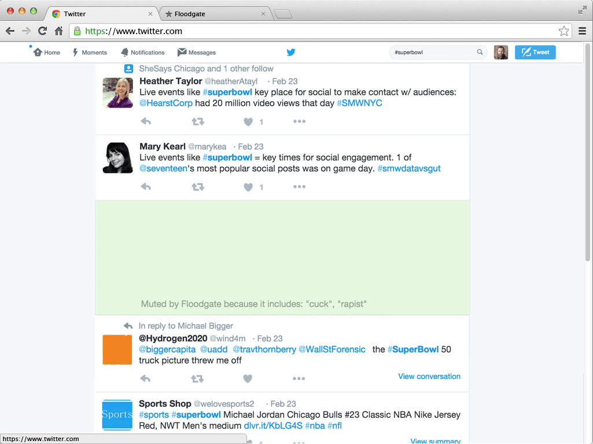

<div class="row">
  <div class="small-12 medium-6 columns">
    <div class="main__headline">
      <h2>Moderate your media.</h2>
      <h5>Floodgate for Chrome filters social media based on rules you create. Don't want to see racial slurs before breakfast? We can help with that.</h5>
      <h5>It's free and easy to install.</h5>

      <div class="main__cta">
        {% include cta--install-floodgate.html %}
      </div>
      <p><a href="/floodgate">Learn more about Floodgate</a></p>

    </div>
  </div>

  <div class="small-12 medium-6 columns show-for-medium-up">
    
  </div>
</div>

